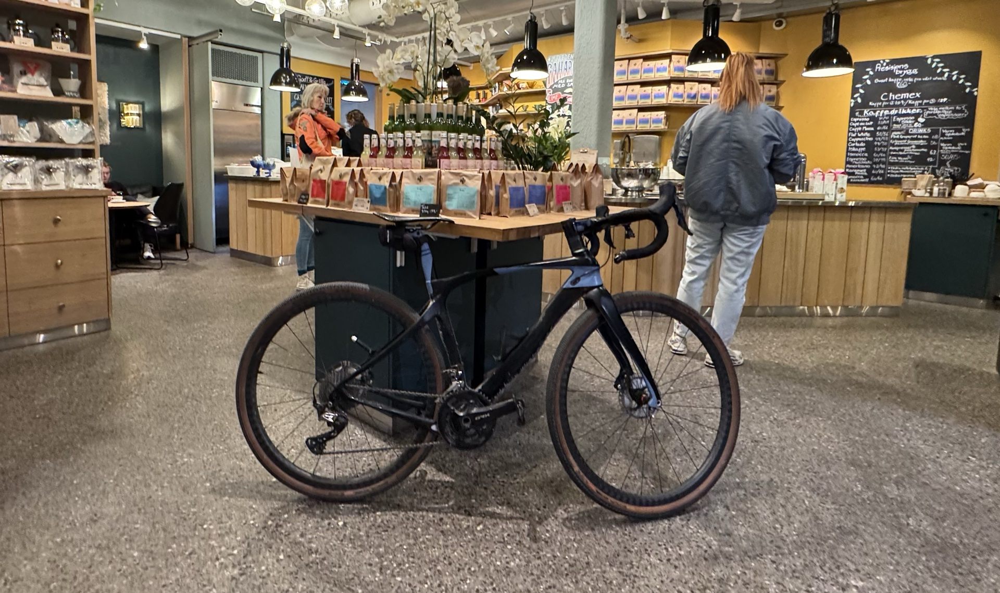

Four shops, one route, why each one is worth the stop
Oslo has over 80 specialty coffee operations for a city of 700,000 people. Most of them are good. A handful are genuinely excellent. Four of them — Tim Wendelboe, Supreme Roastworks, Fuglen and Java — have earned international reputations that outlasted the hype that created them. These are the ones worth building a morning around.
The good news: they sit within a 10-kilometre loop through some of Oslo's best riding. You can cover all four in a half-day, by bike, without rushing.
Start here. Tim Wendelboe won the World Barista Championship in 2004, went on to define what Nordic specialty coffee looks like, and opened a roastery and espresso bar on Grünerløkka's main street. The space is deliberately small — a roaster behind glass, a counter, a few stools. There is nothing to distract from the coffee.
Order espresso or a single-origin filter. The menu is short. The team knows what they're doing and will talk you through what's on if you ask. This is the shop that Norwegian and international coffee professionals visit when they're in the city — not because of its size or its decor, but because the coffee is consistently that good.
Closed on Sundays. Get there before 11am if you want a stool.
Five minutes by bike south along the Akerselva river brings you to Vulkan — an old industrial area repurposed as a food and culture hub. Supreme Roastworks is inside Mathallen, the covered food market.
Supreme is a different energy to Wendelboe. The space is larger, there is food, and the crowd is more mixed — locals working laptops alongside visitors who've done their homework. The batch brew is reliable and well-priced. They roast their own beans, change the selection frequently, and take origin as seriously as anyone in the city.
It is also a good place to linger. The Mathallen building has natural light, the seating is comfortable, and the market stalls around it are worth a look if you have time.
From Vulkan, head west across the river and through the city to Frogner. The ride is easy — mostly flat, past Solli plass and into the residential west side. Fuglen is on Universitetsgata, just off the park.
Fuglen opened in 1963 as a café and bar — the mid-century furniture is original, not sourced for atmosphere. It moved into specialty coffee in the early 2010s and now has outposts in Tokyo and New York, which tells you something about its reach. The espresso programme is well-calibrated and the filter rotation changes weekly.
Afternoons here tip from café to cocktail bar — a rare combination in Oslo. If your timing allows, it is one of the better reasons to linger west of the river.
A short ride from Fuglen brings you to Java on Inkognitogata. It has been here since 1997, which makes it a veteran by specialty coffee standards. Java was doing serious coffee before Oslo had a reputation for it — before Wendelboe had won anything, before the rest of the world started paying attention to Scandinavian roasting.
The approach is quieter and less theoretical than some of the newer operations. The coffee is precise, the atmosphere is calm, and the neighbourhood clientele treat it as a daily ritual rather than a destination. That combination — quality without performance — is what keeps people coming back for nearly three decades.
Tim Wendelboe to Supreme Roastworks is a flat kilometre along the river. Supreme to Fuglen is roughly 4 km west — a few gentle climbs through central Oslo, manageable on any bike. Fuglen to Java is a five-minute ride through Frogner. The full loop is 10 km including the return to the starting point.
On a good day, you cover it in a morning and arrive at each stop in the right frame of mind — enough time between cups for the previous one to settle. If you add food at Mathallen after Supreme, the whole sequence runs about four hours at a comfortable pace.
The Oslo Coffee Tour covers exactly this loop as a private guided ride, with hotel pickup and a guide who knows each café and can make introductions. If you'd rather navigate on your own, the route is straightforward — these are well-signed neighbourhoods and the roads are good.
Tim Wendelboe in Grünerløkka is the most internationally recognised — the 2004 World Barista Champion runs a small roastery and espresso bar that has become a reference for coffee professionals globally. Supreme Roastworks, Fuglen and Java are at the same level. Each has a distinct character. Most serious visitors do all four.
Tim Wendelboe and Supreme Roastworks are about 1 km apart in the Grünerløkka and Vulkan area. Fuglen and Java are in Frogner, roughly 4–5 km west. The full route between all four is around 10 km — a comfortable 30–40 minute ride at a relaxed pace.
Start with filter coffee — it is the medium these roasters design for. Ask for today's single origin. If you want espresso, a classic espresso or cortado shows the coffee best. Avoid adding milk to your first cup; the flavour clarity is the point.
They are different operations. Tim Wendelboe is small, focused, best for espresso and single-origin filter — the kind of place where the conversation is about the coffee. Supreme is larger, more social, with good batch brew and a food menu. Most Oslo coffee visitors do both in the same morning.
Yes. The Oslo Coffee Tour connects Tim Wendelboe, Supreme Roastworks, Fuglen and Java by bike — a 3-hour private guided ride through Grünerløkka, Vulkan and Frogner. Hotel pickup included. From NOK 1 190.
Most Oslo specialty cafés open around 8am on weekdays and 9–10am on weekends. Tim Wendelboe is closed on Sundays. Supreme Roastworks and Fuglen are open daily. Java opens early and is a reliable weekday morning option. Always check current hours before visiting.
A private guided tour connecting Tim Wendelboe, Supreme Roastworks, Fuglen and Java — three hours by bike through Oslo's best coffee neighbourhoods. Hotel pickup, four proper stops, one guide who knows them all.
Oslo Coffee Tour — from NOK 1 190